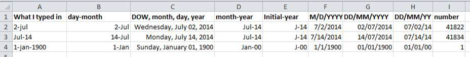
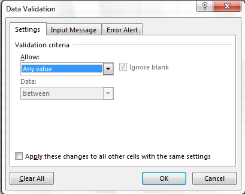
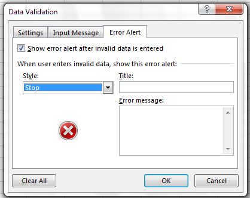
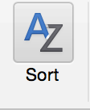

All in One View
Content from Introduction
Last updated on 2026-10-22 | Edit this page
Overview
Questions
- What are basic principles for using spreadsheets for good data organization?
Objectives
- Describe best practices for organizing data so computers can make the best use of data sets.
Good data organization is the foundation of your research project. Most researchers have data or do data entry in spreadsheets. Spreadsheet programs are very useful graphical interfaces for designing data tables and handling very basic data quality control functions.
Spreadsheet outline
After this lesson, you will be able to:
- Implement best practices in data table formatting
- Identify and address common formatting mistakes
- Understand approaches for handling dates in spreadsheets
- Utilize basic quality control features and data manipulation practices
- Effectively export data from spreadsheet programs
Overall good data practices
Spreadsheets are good for data entry. Therefore we have a lot of data in spreadsheets. Much of your time as a researcher will be spent in this ‘data wrangling’ stage. It’s not the most fun, but it’s necessary. We’ll teach you how to think about data organization and some practices for more effective data wrangling. Not only will this save time and effort, it also paves the way for more equitable and inclusive science. Making our work more accessible provides wider avenues for collaboration and improvement!
What this lesson will not teach you
- How to do statistics in a spreadsheet
- How to do plotting in a spreadsheet
- How to write code in spreadsheet programs
If you’re looking to do this, a good reference is Excel Cookbook, published by O’Reilly.
Why aren’t we teaching data analysis in spreadsheets
Data analysis in spreadsheets usually requires a lot of manual work. If you want to change a parameter or run an analysis with a new dataset, you usually have to redo everything by hand. (We do know that you can create macros, but see the next point.)
It is also difficult to track or reproduce statistical or plotting analyses done in spreadsheet programs when you want to go back to your work or someone asks for details of your analysis.
Spreadsheet programs
Many spreadsheet programs are available. Since most participants utilize Excel as their primary spreadsheet program, this lesson will make use of Excel examples.
Free spreadsheet programs that can also be used are LibreOffice Calc, and even Google Sheets.
Commands may differ a bit between programs, but the general idea is the same.
Exercise
- How many people have used spreadsheets in their research?
- How many people have accidentally done something that made them frustrated or sad?
Spreadsheets encompass a lot of the things we need to be able to do as researchers. We can use them for:
- Data entry
- Organizing data
- Subsetting and sorting data
- Statistics
- Plotting
We do a lot of different operations in spreadsheets. What kind of operations do you do in spreadsheets? Which ones do you think spreadsheets are good for?
Problems with Spreadsheets
Spreadsheets are good for data entry, but in reality we tend to use spreadsheet programs for much more than data entry. We use them to create data tables for publications, to generate summary statistics, and make figures.
Generating tables for publications in a spreadsheet is not optimal - often, when formatting a data table for publication, we’re reporting key summary statistics in a way that is not really meant to be read as data, and often involves special formatting (merging cells, creating borders, making it pretty). Cutting and pasting from a spreadsheet to a document software (like Word) can have unpredictable results. We advise you to create tables within these document software using the document’s own table editing software.
The latter two applications, generating statistics and figures, should be used with caution: because of the graphical, drag and drop nature of spreadsheet programs, it can be very difficult, if not impossible, to replicate your steps (much less retrace anyone else’s), particularly if your stats or figures require you to do more complex calculations. Furthermore, in doing calculations in a spreadsheet, it’s easy to accidentally apply a slightly different formula to multiple adjacent cells. When using a command-line based statistics program like R or SAS, it’s practically impossible to apply a calculation to one observation in your dataset but not another unless you’re doing it on purpose.
Using Spreadsheets for Data Entry and Cleaning
However, there are circumstances where you might want to use a spreadsheet program to produce “quick and dirty” calculations or figures, and data cleaning will help you use some of these features. Data cleaning also puts your data in a better format prior to importation into a statistical analysis program. We will show you how to use some features of spreadsheet programs to check your data quality along the way and produce preliminary summary statistics.
In this lesson, we will assume that you are most likely using Excel as your primary spreadsheet program - there are others (gnumeric, Calc from OpenOffice), and their functionality is similar, but Excel seems to be the program most used by biologists and ecologists.
In this lesson we’re going to talk about:
- Formatting data tables in spreadsheets
- Formatting problems
- Dates as data
- Quality control
- Exporting data
- Good data organization is the foundation of any research project.
Content from Formatting data tables
Last updated on 2026-10-22 | Edit this page
Overview
Questions
- How should I lay out data in a spreadsheet?
Objectives
- Describe the rules of tidy data.
- Identify what stops a computer from using a messy spreadsheet.
The most common mistake
The most common mistake is treating a spreadsheet like a notebook: relying on context, notes in the margin, colour and the position of cells to carry meaning. People can usually decode this. Computers cannot.
Set up a well-formatted table from the start, before you enter the first result. Reorganising later costs far more, and every reorganisation risks introducing errors.
Three rules
- Each variable in its own column, each observation in its own row, one value in each cell. A variable is something you measure or record: site, date, Enterococci count, water temperature. An observation is one sample.
- Leave raw data raw. Copy the file before you clean it, and keep a plain-text log of every change you make.
- Keep explanations out of the cells. Units go in the column header. Notes go in a notes column. Legends and definitions go in a separate file (a data dictionary, see episode 6).
These rules are often called tidy data.
An example
Sipho recorded each beach as its own block, side by side:
| NORTH BEACH | ADDINGTON | |||||
|---|---|---|---|---|---|---|
| Date | Entero (cfu/100mL) | Temp °C | Date | Entero (cfu/100mL) | Temp °C | |
| 2024-03-05 | 308 | 23.6 | 2024-03-05 | 91 | 22.5 | |
| 12 Mar | 54 | 22.6 | 12 Mar | TNTC | 20.8 |
To a computer, the first data row holds one observation with seven values, two of them called “Date”. The beach name sits in a merged heading that no program will read.
The tidy version puts site in a column and gives each sample its own row:
| sample_id | site | sample_date | enterococci_cfu_100ml | above_count_range | water_temp_c |
|---|---|---|---|---|---|
| DBN-2024-001 | North Beach | 2024-03-05 | 308 | FALSE | 23.6 |
| DBN-2024-002 | North Beach | 2024-03-12 | 54 | FALSE | 22.6 |
| DBN-2024-009 | Addington | 2024-03-05 | 91 | FALSE | 22.5 |
| DBN-2024-010 | Addington | 2024-03-12 | TRUE | 20.8 |
It is longer and less pretty. It is also the only one of the two that a script, a database or an AI tool can use without guessing.
Data entry and data analysis may want different layouts
A field sheet designed for fast entry on a boat may not be tidy. That is acceptable, provided the conversion to a tidy table is written down and, ideally, automated.
Exercise: spot the mess
Download beach_water_quality_MESSY.xlsx from the Setup page and open it.
Sipho sampled two beaches in 2024 and Lerato sampled four in 2025. Each kept the data in their own way. You now own the data and want the mean Enterococci count per beach.
With the person next to you, list everything in the workbook that would stop you, or an AI tool, from calculating that mean correctly. For each problem, write how you would fix it.
Do not edit the original. Copy a tab first.
The workbook contains every mistake listed in the next episode, and a few more.
Among them: two tables on one tab, merged headings, a title and a legend
inside the data, five different date formats, units typed into cells,
<10, TNTC and -999 in a
numeric column, colour used to flag exceedances, thirteen spellings of
four beach names, a mean calculated in the middle of the data, a
repeated header row, and a temperature in Fahrenheit among Celsius
values.
The full answer key is in the Instructor Notes. The tidy result is
beach_water_quality_tidy.csv.
Further reading
- Karl W. Broman and Kara H. Woo (2018). Data Organization in Spreadsheets. The American Statistician, 72(1), 2-10. DOI: 10.1080/00031305.2017.1375989
- Hadley Wickham (2014). Tidy Data. Journal of Statistical Software, 59(10). DOI: 10.18637/jss.v059.i10
- Put each variable in a column, each observation in a row, and one value in each cell.
- Never modify raw data; work on a copy and log your changes.
- Keep units in headers and explanations in a separate file.
Content from Common mistakes
Last updated on 2026-10-22 | Edit this page
Overview
Questions
- What are the common formatting problems, and how do I avoid them?
Objectives
- Recognise and fix common spreadsheet formatting problems.
- Explain how each problem misleads a script or an AI tool.
Each problem below appears in
beach_water_quality_MESSY.xlsx. The cell reference tells
you where to look.
- Multiple tables on one sheet
- Multiple tabs for the same kind of data
- Blanks and zeros
- Problematic null values
- Censored values: below detection, too many to count
- Inconsistent categories
- Formatting that carries meaning
- Merged cells
- Comments and units in cells
- More than one value in a cell
- Calculations and repeated headers inside the data
- Problematic column names
- Special characters
- Metadata inside the data table
- Dates
Multiple tables on one sheet
Where: 2024 Sipho, columns A-D and F-I.
A computer treats each row as one observation. Two tables side by side make it read a North Beach sample and an Addington sample as one record, with two columns of the same name.
Fix: one table, with a site column.
Multiple tabs for the same kind of data
Where: the 2024 Sipho and
2025_Lerato (final) v2 tabs.
Separate tabs invite inconsistency: here the two collectors used different column names, orders and units. Before any analysis someone must combine them, and must do it correctly.
Fix: one table, with collector and date
columns. When a long sheet hides its header, freeze the top row (View
> Freeze Panes) rather than repeating the header.
Blanks and zeros
Where: 2024 Sipho, G9.
A zero is a measurement. A blank means nothing was recorded. Is G9 a count of zero, a sample not taken, or a value someone forgot to type? Nobody can tell, and the answer changes the mean.
Fix: record true zeros as 0. Leave a
cell blank only when no measurement exists, and record why in a separate
column (next section).
Problematic null values
Where: 2024 Sipho, B7 (-999).
Many programs treat -999 as a number. Spreadsheet
AVERAGE does, which is why the North Beach mean in the
Summary tab is negative.
| Null value | Problem | Recommendation |
|---|---|---|
| 0 | Indistinguishable from a true zero | Never use |
| Blank | Hard to tell missing from overlooked, or from a space | Best option, with a reason column |
| -999, 999 | Read as numbers by many programs; enters calculations | Avoid |
| NA, na | Can be a real code; turns a numeric column into text in some tools | Acceptable in R |
| N/A, NULL, None, “No data”, “Missing”, -, . | Inconsistent support; changes the column’s type | Avoid |
Adapted from White et al. (2013), Nine simple ways to make it easier to (re)use your data.
Fix: a blank cell, plus a
missing_reason column that says why
(bottle_broken, not_sampled_rough_sea). The
reason is information; keeping it lets you, or a model, tell a broken
bottle from a rough sea.
Censored values: below detection, too many to count
Where: 2024 Sipho, B10 and G7
(<10); G6 (TNTC).
Laboratory and instrument data often hit a limit. The method cannot
count below 10 cfu/100 mL, or the plate is “too numerous to count”.
Typing <10 or TNTC puts text in a numeric
column. Some programs then treat the whole column as text; others drop
those cells silently. Replacing them with 0,
5, 10 or 2000 invents data.
Fix: leave the count blank and set a flag column:
below_detection = TRUE or
above_count_range = TRUE. Record the limits in the data
dictionary. How to treat censored values in analysis is a statistical
decision; the data table’s job is to record them honestly.
Inconsistent categories
Where: 2025_Lerato (final) v2, column A.
North Beach appears as North Beach,
north beach, North Bch and
North Beach (with a trailing space). Umhlanga appears three
ways, Addington three, uShaka three. People see four beaches. A computer
sees thirteen. A machine-learning model trained on this column learns
thirteen classes.
Fix: agree a fixed list of values, enforce it with a drop-down (episode 4), and record the list in the data dictionary. For cleaning many variants at once, OpenRefine’s clustering feature is effective; see the Data Carpentry OpenRefine lesson.
Formatting that carries meaning
Where: red cells in both tabs; yellow rows 5-6 in Lerato’s tab.
Red means “exceeds guideline” to Sipho. Yellow means “exclude” to Lerato, and to nobody else. Colour does not survive export to CSV, and no analysis program or AI tool reads it.
Fix: a column for anything you would colour.
Exceedance can be calculated from the count; exclusion needs an
exclude column and a reason.
Merged cells
Where: 2024 Sipho, A1 and row 3.
Merged cells look tidy and break almost everything that reads the file.
Fix: restructure so that nothing needs merging.
Here, the merged beach heading becomes a site column.
Comments and units in cells
Where: 2024 Sipho, B8 (55 cfu),
the comment on B6; Lerato column D (23.0C).
Spreadsheet comments are invisible to other programs. Units typed into a cell turn a number into text.
Fix: a notes column for comments. Units
in the column header (water_temp_c), with one unit per
column. Lerato’s row 14 holds 74.1, a temperature in Fahrenheit among
Celsius values; convert it (23.4 °C) and note the conversion in your
processing log.
More than one value in a cell
Where: Lerato column E (HW+2 / calm) and F8
(1M swimmer, 2F swimmers).
One cell holds tide state and sea state; another holds two counts and two categories. Neither can be sorted, filtered or analysed.
Fix: one column per value: tide,
sea_state, or a count column per category.
Calculations and repeated headers inside the data
Where: Lerato row 10 (Mean North Beach) and row
19 (header repeated).
A summary row is read as one more observation. A repeated header turns every column into text from that row on.
Fix: keep raw data free of calculations. Calculate in a separate sheet, or better, in a script.
Problematic column names
Where: Entero (cfu/100mL),
Temp °C, Site / tide.
Spaces, brackets, slashes and symbols cause errors in most analysis tools. Abbreviations that make sense today will not in six months.
| Good name | Good alternative | Avoid |
|---|---|---|
| enterococci_cfu_100ml | EnterococciCfu100ml | Entero (cfu/100mL) |
| water_temp_c | WaterTempC | Temp °C |
| sample_date | SampleDate | Date |
| missing_reason | MissingReason | ? |
| site | Site | Site / tide |
Special characters
Where: Lerato F12, pasted from WhatsApp, holds an em-dash and curly quotation marks.
Text pasted from messaging apps or word processors brings invisible characters, line breaks and non-standard quotes. These cause encoding errors and split rows when the file is exported.
Fix: treat a text cell like a simple web form: letters, numbers, spaces, basic punctuation. No line breaks.
Metadata inside the data table
Where: 2024 Sipho, A1 (title) and A15
(legend).
Information about the data is essential, but inside the table it breaks the grid. Is row 15 an observation?
Fix: a separate plain-text file next to the data: a README and a data dictionary (episode 6).
Text on metadata adapted from Research Data MANTRA, EDINA and Data Library, University of Edinburgh, CC-BY 4.0, via the original Data Carpentry lesson.
- Use one table per sheet and one sheet per kind of data.
- Record zeros as zeros; leave missing values blank and record why.
- Flag censored values in a column; never type
<10orTNTCinto a number column. - Fix category spellings with a controlled list.
- Do not use colour, merged cells or comments to carry information.
- Put units in headers and one value in each cell.
- Keep calculations, legends and titles out of the data table.
Content from Dates as data
Last updated on 2026-10-22 | Edit this page
Overview
Questions
- Why do dates cause so many errors?
- How should I record dates and times?
Objectives
- Describe how spreadsheets store and display dates.
- Record dates in a form that no program can misread.
What day is 04/02/2024?
Cell A9 of Sipho’s tab reads 04/02/2024. In South Africa
and most of the world that is 4 February. In the United States it is 2
April. The sampling schedule says weekly from 5 March, so it must be 2
April, but the cell does not say so, and neither a script nor an AI tool
will check the schedule.
Column A of the same tab holds five formats for one kind of value:
| Cell | As typed | Problem |
|---|---|---|
| A5 | a real spreadsheet date | Fine inside Excel; shown differently on other computers |
| A6 | 12 Mar |
No year; Excel silently adds the current year |
| A7 | 2024/03/19 |
Text, not a date |
| A8 | 26-03-2024 |
Text, day first |
| A9 | 04/02/2024 |
Text, month first: ambiguous |
How spreadsheets store dates
Excel stores a date as a number: the count of days since 31 December 1899 (so 2 July 2014 is 41822). What you see depends on the computer’s regional settings, not on the data. Three consequences follow:
- The same file can show different dates on two computers.
- Excel on older Macs used a 1904 date system; dates moved between systems can shift by about four years.
- Excel converts things that are not dates into dates. Gene names such
as MAR1 and sample codes such as
12-3become dates, and the original text cannot be recovered.

Record dates unambiguously
Use one of these, and say which in your data dictionary:
-
ISO 8601:
YYYY-MM-DD, for example2024-04-02. It sorts correctly, every analysis tool reads it, and it is unambiguous worldwide. This is the default for this lesson. - Separate columns for year, month and day.
-
Year and day of year (
2024,93), useful for seasonal analysis.
For date and time together, use YYYY-MM-DDThh:mm, for
example 2024-04-02T09:15, and state the time zone (SAST,
UTC+2) in the data dictionary.
To stop Excel converting a typed ISO date into its own format, format the column as Text before you enter data, or type the dates in a CSV file.
Exercise: what happens on export?
Copy Sipho’s North Beach block to a new tab. Save that tab as
CSV UTF-8 and open the CSV in a plain text editor (Notepad,
TextEdit). Then open the CSV again in Excel.
How do the dates in cells A5 and A6 change at each step?
The real date in A5 is written out in whatever format your computer’s
regional settings use. The text 12 Mar may be turned into a
date in the current year when the CSV is reopened. Each round trip
through Excel can change the data. ISO dates stored as text survive
unchanged.
- Spreadsheets store dates as numbers and display them according to local settings.
- Record dates as ISO 8601 text,
YYYY-MM-DD, or as separate year, month and day columns. - Check every date after moving data between programs or computers.
Content from Quality control
Last updated on 2026-10-22 | Edit this page
Overview
Questions
- How do I stop bad data getting in, and find the bad data already there?
Objectives
- Use data validation to prevent invalid entries.
- Use sorting and conditional formatting to find errors.
Quality assurance stops bad data being entered. Quality control finds errors after entry. Prevention is cheaper: thirteen spellings of four beaches take minutes to clean and seconds to prevent.
Quality assurance: data validation
Data validation (Excel) or Validity (LibreOffice Calc) restricts what a column accepts.
Set the site column to accept only the four beaches:
- Select the
sitecolumn. - Data > Data Validation (Excel) or Data > Validity (Calc).
- In Allow, choose List.
- In Source, type
North Beach,Addington,uShaka,Umhlanga Main. - Try typing
Umhlanga Rocks. The spreadsheet refuses it.

A list also gives a drop-down, so nobody needs to remember the spelling. Use the same tool for numbers: Enterococci counts must be whole numbers of zero or more; water temperature in Durban should fall between, say, 10 and 35 °C. A Fahrenheit value such as 74.1 is then rejected at entry.
On the Error Alert tab you can change a hard stop into a warning, for values that are unusual but possible.

Quality control: finding errors
Before you start, save the original file and work on a copy. Make sure the copy holds values, not formulas, so that moving cells cannot change results.
Sort each column
Bad values collect at the top or bottom of a sorted column. Sort the
count column from largest to smallest: text such as 55 cfu,
<10 and TNTC gathers at one end, blanks at
the other, and -999 at the bottom of the numbers.

When Excel asks, choose Expand the selection. Sorting one column on its own scrambles your rows: each value moves away from the sample it belongs to.
Conditional formatting, with care
A colour scale on the count column (Home > Conditional Formatting > Color Scales) shows outliers at a glance, and leaves text cells uncoloured. Use it to find problems while checking. Never use colour to record information.
Count the categories
Select the site column and use Data >
Filter. The filter drop-down lists every distinct value in the
column. Four beaches should give four entries; Lerato’s tab gives
thirteen.
Keep a log
As you clean, write each step in a plain-text file kept with the data: what you changed, why, and when. If an AI tool did the cleaning, record the tool, the date and the prompt. See episode 7.
- Always work on a copy of the raw data.
- Use data validation to prevent invalid entries and inconsistent categories.
- Sort, filter and colour-scale columns to find errors.
- Sort whole rows, never a single column.
Content from Exporting data
Last updated on 2026-10-22 | Edit this page
Overview
Questions
- In what format should I keep and share data?
Objectives
- Store data in open, plain-text formats.
- Export a spreadsheet to CSV safely.
Why not keep data as .xlsx?
- It is a proprietary format; other programs, and future versions, may read it differently.
- It hides things that are not data: colour, comments, formulas, merged cells, several tabs.
- Most data repositories, many journals and many funders require open formats.
- Dates stored in Excel’s internal numbers can shift when files move between versions and systems (episode 3).
Use CSV (or TSV)
A CSV (comma-separated values) file is plain text: one row per line, columns separated by commas. Any program can open it, including a text editor, Python, R, a database and every AI tool. It holds one table, no colour, no formulas and no comments. That is the point: it keeps only the data.
To export from Excel: File > Save As, choose CSV UTF-8 (Comma delimited) (.csv). Excel warns that only the active sheet is saved and that some features will be lost. Both warnings are expected.
UTF-8 keeps characters such as °, é and
isiZulu names intact.
You can still open a CSV in Excel. Keep the tidy CSV as your master copy and treat any .xlsx as a working view.
Commas inside data, and the decimal comma
If values contain commas (notes, addresses), make sure they are
quoted, or use tab-separated values (TSV). Some computers use a comma as
the decimal separator, so 22,5 may mean 22.5. Check your
regional settings, and state the decimal separator in the data
dictionary. A full stop is the safe choice for shared data.
Line endings
Windows ends lines with two hidden characters (CR LF); Linux and
macOS use one (LF). Most modern tools handle both. If a script reports
values such as 23.6\r, convert the line endings with your
text editor or a tool such as dos2unix.
- Keep master data in open, plain-text formats such as CSV or TSV, encoded as UTF-8.
- CSV stores only the data: one table, no formatting, no formulas.
- State the delimiter, decimal separator and encoding in the data dictionary.
Content from Data dictionaries, and AI as a reader
Last updated on 2026-10-22 | Edit this page
Overview
Questions
- What should I record about my data, and where?
- How do I help an AI tool understand my data?
Objectives
- Explain the minus-26 mean, and get the correct answer from tidy data.
- Write a data dictionary for a tidy table.
- Use the data dictionary as context when asking an AI tool about your data.
Back to minus 26
Sipho entered these values for North Beach in 2024:
308, 54, -999, 55 cfu, 114, <10, 252, 115
Spreadsheet AVERAGE keeps the six cells that are
numbers, including -999, and silently skips the two that
are text:
(308 + 54 − 999 + 114 + 252 + 115) / 6 = −26.0
The tidy file records the same field sheet as six measured counts (308, 54, 55, 114, 252, 115), one sample below detection, and one missing because the bottle broke. The mean of the measured counts is 149.7 (n = 6).
Both numbers came from the same field sheet. Only one survives a thesis examiner. An AI assistant given the messy sheet will happily report the other.
See it in Python (optional)
demo_messy_vs_tidy.py in the lesson data reads both
files and prints both means. Run it from the folder holding the
data:
OUTPUT
Messy mean : -26.0 <- '-999' counted as data; '55 cfu' and '<10' silently dropped
Tidy mean : 149.7 (n = 6 measured; 1 below detection; 1 missing with a stated reason)The messy code is what an AI assistant typically writes when asked for a quick mean: read the column, convert to numbers, average. It runs without an error. That is the danger.
Metadata: data about your data
A tidy table holds the values. It does not say what
below_detection means, what the detection limit was, or
which site names are allowed. That information is
metadata, and it belongs in plain-text files kept
beside the data, never inside the table.
Two files cover most needs:
- a data dictionary: one row per column, saying what each column means;
- a README: what the dataset is, who made it, how it is organised, and what may be done with it (episode 7).
Many fields have metadata standards. The Digital Curation Centre keeps a list. Where none exists, ask: what would a stranger need to use this data without talking to me?
A data dictionary
Here is part of
beach_water_quality_data_dictionary.csv:
| column | description | type | units_or_format | allowed_values_or_notes |
|---|---|---|---|---|
| site | Beach sampling site | category | North Beach, Addington, uShaka, Umhlanga Main | |
| sample_date | Date the sample was collected | date | YYYY-MM-DD | |
| enterococci_cfu_100ml | Enterococci count | number | cfu per 100 mL | Blank when not measured, below detection or above range |
| below_detection | Count below detection limit | boolean | TRUE means < 10 cfu/100 mL; count left blank | |
| missing_reason | Why no measurement exists | category | blank, bottle_broken, not_sampled_rough_sea |
Exercise: write the dictionary
Without looking at the file, write dictionary entries for these
columns of beach_water_quality_tidy.csv:
sample_id, collector,
above_count_range, water_temp_c and
notes.
For each, give: what it means, its type, its units or format, and its allowed values.
Compare yours with
beach_water_quality_data_dictionary.csv. Typical gaps: the
upper count limit for above_count_range (2000 cfu/100 mL),
the unit for temperature, and the rule that sample_id is
never reused.
The data dictionary is the prompt
An AI tool knows nothing about your project. Given only a CSV, it
guesses what below_detection means and what to do with
blank counts. Given the CSV and the dictionary, it can follow
your definitions, and you can check that it did.
A prompt that works:
Attached: beach_water_quality_tidy.csv and its data dictionary.
Using only rows where enterococci_cfu_100ml is not blank, give the mean
count per site per year, with n. Report separately how many samples per
site were below detection, above the count range, or missing, and why.
Show the code you used.Note the last line. Asking for the code lets you check the calculation, rather than trusting a number.
Exercise: messy versus tidy (demonstration)
If an approved AI tool is available, ask it for the mean count at
North Beach in 2024 twice: once giving it
beach_water_quality_MESSY.xlsx, and once giving it the tidy
CSV with the data dictionary.
Which answer would you put in a thesis or a report? What did you need to check before trusting either?
Answers vary between tools and between runs. With the messy file,
look for whether the tool noticed -999,
<10, TNTC, the 55 cfu cell and
the two-table layout, or quietly worked around them. With the tidy file
and dictionary, the answer should be 149.7 with n = 6, and the code
should be easy to check.
- Calculations on messy data can be confidently wrong, in a spreadsheet or by an AI tool.
- Keep metadata in plain-text files beside the data: a data dictionary and a README.
- Give an AI tool the data dictionary with the data, and ask for the code it used.
Content from Organising a project
Last updated on 2026-10-22 | Edit this page
Overview
Questions
- How should I organise the files of a project?
- Where should I keep raw data, and how should I back it up?
Objectives
- Lay out a project folder that separates raw data, processed data and outputs.
- Name files so they sort, and so people and programs can read them.
- Plan storage and backups for raw data.
A tidy table is one file. A thesis, a funded project or an office process produces hundreds. The same principle applies at the level of folders: organise so that someone else, including you in two years, can find things without asking.
A folder skeleton
beach-water-quality/
README.txt what, who, conventions, rules for sharing and AI use
data/
raw/ original files exactly as received; read-only
processed/ tidy files made from raw
docs/ data dictionary, protocols, permits, ethics approval
scripts/ code that turns raw into processed, and processed into results
outputs/ figures, tables, model results; can be regeneratedThe rule that matters most: files flow one way, from
raw to processed to outputs.
Nothing is ever written back into raw.
Leave raw data raw
Raw data are the foundation. Every result must trace back to them.
- Make the
rawfolder read-only (right-click > Properties > Read-only on Windows; Get Info > Sharing & Permissions on macOS). - Never open a raw file and save over it. Excel may change dates, drop leading zeros or convert codes even if you edit nothing.
- When raw data arrive from an instrument, a lab or a collaborator, record where they came from and when in the README.
Name files for people and programs
A good file name says what the file holds, sorts correctly, and contains no characters that break software.
| Avoid | Prefer |
|---|---|
Data final FINAL v2 (Lerato).xlsx |
2025-03-04_beach-wq_enterococci_raw.xlsx |
results new.csv |
2025-05-12_beach-wq_enterococci_tidy_v03.csv |
Fig 3.png |
fig03_enterococci-by-site.png |
Rules:
- Start with the date as
YYYY-MM-DD, so files sort in time order. - Use hyphens within a part and underscores between parts; no spaces.
- Number versions with leading zeros:
v01,v02, …,v10. - Never use “final”. There is always another version.
For files that change often, such as scripts, version control (Git) beats version numbers in names. See the Software Carpentry lesson Version Control with Git.
Give every sample a unique identifier
DBN-2024-003 identifies one sample for ever. “North
Beach, 19 March” does not: a second sample on the same day, or a
re-test, breaks it. Assign the identifier when the sample is collected,
write it on the bottle, and use it in every file that refers to the
sample. It is the key that joins your field sheet to the lab
results.
Store and back up
- Keep data where you and your supervisor or manager can reach them. Data held only on a student’s laptop leave with the student.
- Keep at least two backups in different physical places, for example the institutional network or cloud storage plus an external drive kept at home.
- Check that backups can be restored. A backup never tested is a hope.
- Large data (camera footage, PIV images, model output) need a plan before collection starts: how much space, where, and for how long. Ask your institution’s research data or IT service what is provided.
Exercise: your own project
Sketch the folder skeleton for a project of your own. Where do your raw data live today? How many copies exist, and where? Who else can reach them?
Common answers: raw data mixed with processed files; one copy, on a laptop; nobody else has access. Each is one change away from being fixed. Write that change on your sticky note.
Write a README
README_TEMPLATE.txt in the lesson data gives a skeleton:
what the data are, the folder layout, the files, conventions for dates,
missing values and units, a processing log, rules for access and AI use,
and how to cite the data. Fill it in at the start of a project and
update it as you go.
- Separate raw data, processed data, scripts and outputs; files flow one way.
- Make raw data read-only and record their origin.
- Name files with ISO dates, no spaces and numbered versions.
- Give every sample a unique identifier.
- Keep at least two backups in different places, and test them.
Content from AI tools and your data
Last updated on 2026-10-22 | Edit this page
Overview
Questions
- What data may I give to an AI tool?
- How do I keep AI-assisted work reproducible?
Objectives
- Decide whether a given dataset may be given to an AI tool.
- Record AI-assisted processing so that it can be checked and repeated.
What may leave the building
Uploading a file to an AI tool sends it to a third party. Depending on the tool and your account, the provider may store it, and some consumer services may use it to improve their models. Before you upload, ask three questions:
- Does it contain personal information? Names, student or staff numbers, ID numbers, contact details, health information or marks are personal information under South Africa’s Protection of Personal Information Act (POPIA). Processing them needs a lawful basis and adequate safeguards.
- Is it bound by an agreement? Funders, industry partners, permit conditions and data-sharing agreements may restrict where data go.
- Is it unpublished or confidential? Unpublished results, examination material and intellectual property deserve the same care you would give an email to a stranger.
If any answer is yes, use only a tool your institution has approved for that kind of data, or remove the sensitive parts first.
Your institution’s rules
[ADD: link to your institution’s guideline on generative AI and its list of approved tools.]
[ADD: name or office of the POPIA information officer to contact with questions.]
Exercise: may it go into a public AI chatbot?
For each case, decide: yes, no, or only with conditions.
- The synthetic beach dataset from this lesson.
- Your unpublished thesis data, collected under a funder agreement.
- A class list with student numbers and marks, which you want “tidied up”.
- Interview transcripts in which participants are named.
- Yes. It is synthetic and openly licensed.
- Only with conditions. Check the agreement, and use an institution-approved tool.
- No, not as it stands. It is personal information under POPIA. Remove names and numbers first, or use an approved tool.
- No, unless the participants consented to it and your ethics approval allows it. Anonymise first.
Keep AI-assisted work reproducible
If an AI tool cleaned, transformed or analysed your data, treat it like any other instrument and log its settings. Add a line to the processing log in your README:
2025-05-12 JP Harmonised site names (13 variants -> 4) with an AI assistant
[tool name and version]; prompt saved as docs/prompts/2025-05-12_sites.txt;
output checked against a Data > Filter list of distinct values.Better still, ask the tool for code, check the code, and save and run the code yourself. A saved script repeats exactly; a chat conversation does not.
Organisation is what makes AI useful
The habits in this lesson do two jobs. They protect your data from the mistakes of people, spreadsheets and AI tools. They also make your data ready for the analysis, modelling and machine learning you may want to do next: a tidy table with a data dictionary is close to training-ready; a messy workbook is months of cleaning away.
- Before uploading, check for personal information, agreements and confidentiality.
- Use institution-approved tools for sensitive data, or remove the sensitive parts first.
- Log AI-assisted processing like any instrument: tool, date, prompt, and how you checked the result.
- Prefer code you can save and re-run over answers in a chat.